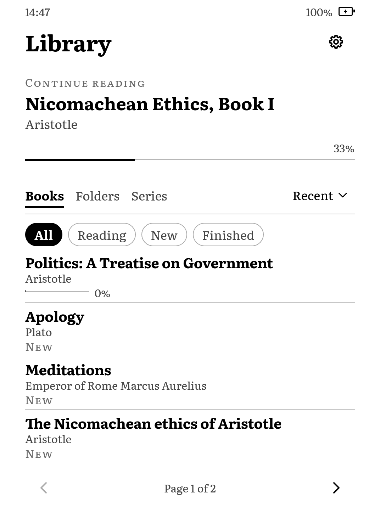

I built a new interface for my old Kindle
I replaced the old stock UI on my Kindle with a custom one over a weekend. I guess this is a cool use of AI. I find it really encouraging to be able to take an old device and give it a new life.
It also stops the store and several of the stock Kindle background services while it's running. There's much less running in the background, and it uses significantly less RAM. But most importantly, it feels like it's actually yours.
So far, it has:
- A library with shelves, folders and series.
- A reader for EPUB, DRM-free MOBI, PDF and TXT.
- Offline dictionaries, highlights and popup footnotes.
- You can add your own fonts.
- Night mode.
There were some quirks with ghosting, which required some tweaking, but now it works very well on my Kindle. I'll fix bugs as they come up in real usage.
Here is a clickable preview. Try the dictionary, reader menu and night mode:

Real screenshots from my Kindle. Only selected controls are interactive.
More screenshots on GitHubI plan to support more devices, but for now I only have one refurbished Kindle Paperwhite 4. I am open to contributions though.
The project is called Aristotle, based on the Plato reader ;)
If you have a Paperwhite 4 and want to try it, there are installation notes. It is still alpha and needs a jailbreak.
I think we'll see more projects like this. AI agents keep getting better, and there's a lot of perfectly good hardware out there whose software just stopped getting updates.